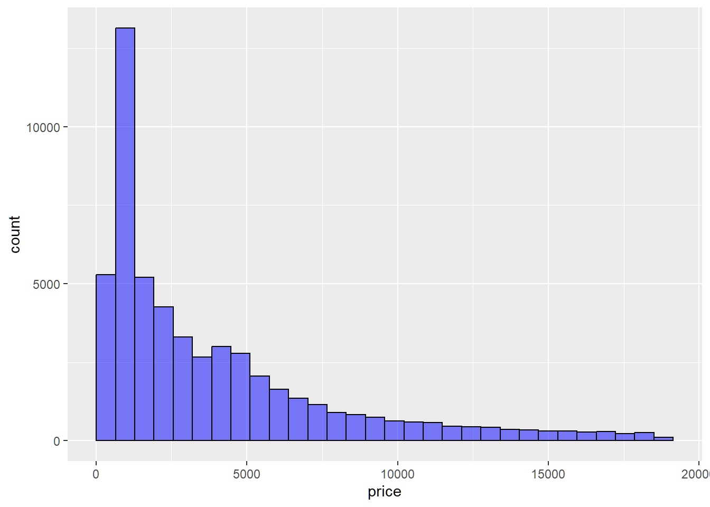
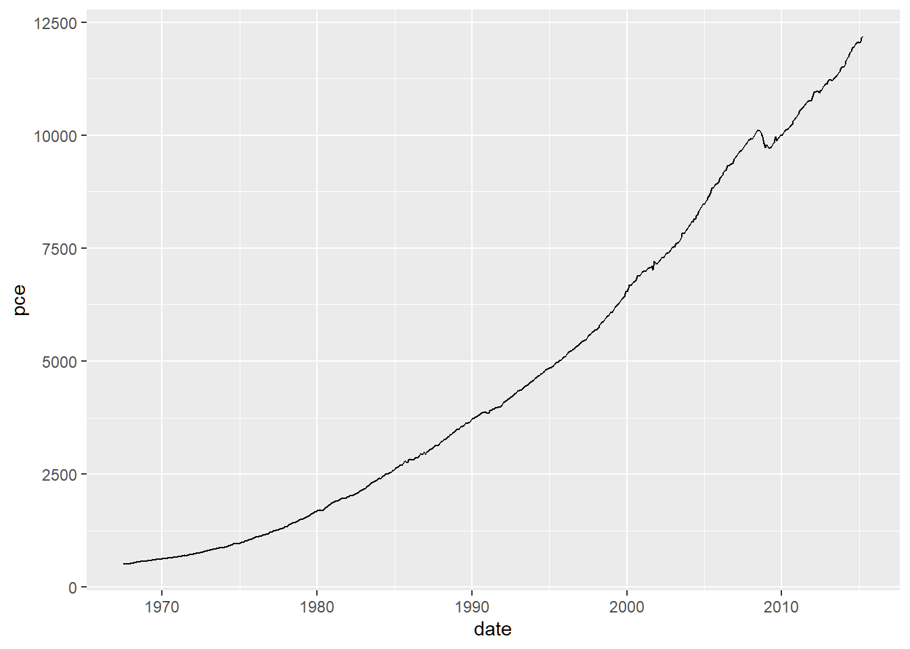
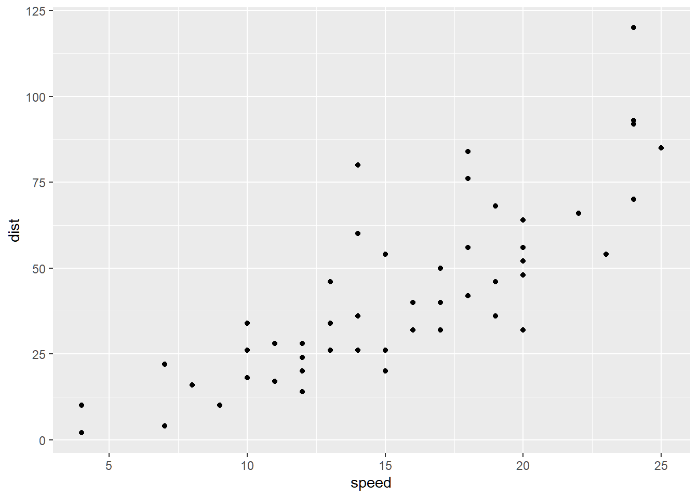

import numpy as npIntrodução
Em programação, é importante que os códigos sejam limpos e enxutos para que os leitores possam entender o que está sendo feito. Dentro desse contexto, há algo que costumo fazer nos meus códigos que é a tarefa de “renomear” os pacotes ou dar apelido para eles. Por exemplo, na linguagem Python, isso pode ser feito assim:
Isso significa que a biblioteca numpy pode ser acessada utilizando np e assim os métodos e atributos das bibliotecas podem ser utilizados com menos código. Por exemplo, para criar um array, o código abaixo pode ser utilizado.
np.array([1,2,3])Na linguagem R, costumo ver mais códigos contendo os comandos library(nome_do_pacote) ou require(nome_do_pacote) sem ter as “renomeações” ou apelidos. Inspirado na linguagem Python, vou mostrar como fazer a mesma coisa na linguagem R, isto é, como “renomear” ou apelidar os pacotes. Há algumas maneiras de fazer isso no R utilizando pacotes, mas vou mostrar duas maneiras apenas, utilizando os operadores $ e ::.
Operador $
Aqui para acessar os métodos e atributos do pacote, se utiliza o pacote box. Segue o código abaixo.
box::use(gg = ggplot2)
gg$ggplot(gg$aes(x=price),data=gg$diamonds) +
gg$geom_histogram(fill="blue",col="black",alpha=0.5)
Operador ::
Aqui para acessar os métodos e atributos do pacote, se utiliza o pacote namespace ou se cria uma função.
Segue os códigos abaixo.
- Forma 1: Usando pacote
library(namespace)
registerNamespace('gg', loadNamespace('ggplot2'))<environment: namespace:ggplot2>gg::ggplot(gg::aes(x=date,y=pce),data=gg::economics) +
gg::geom_line()
- Forma 2: Criando uma função
registerNamespace <- function (name = NULL, env = NULL)
{
Rcpp::cppFunction('
#include <R.h>
#include <Rdefines.h>
SEXP nsreg() {
return R_NamespaceRegistry;
}
')
nsr <- nsreg()
nsr[[name]] <- env
env
}
registerNamespace(name='gg',env=base::loadNamespace('ggplot2'))<environment: namespace:ggplot2>gg::ggplot(gg::aes(x=speed,y=dist),data=cars) +
gg::geom_point()
Referências
https://pypi.org/project/numpy/
https://cran.r-project.org/web/packages/box/
https://cran.r-project.org/web/packages/namespace/index.html
https://cran.r-project.org/web/packages/ggplot2/
https://www.lamimdba.com.br/2018/10/dica-erros-ora-31693-ora-02354-ora.html